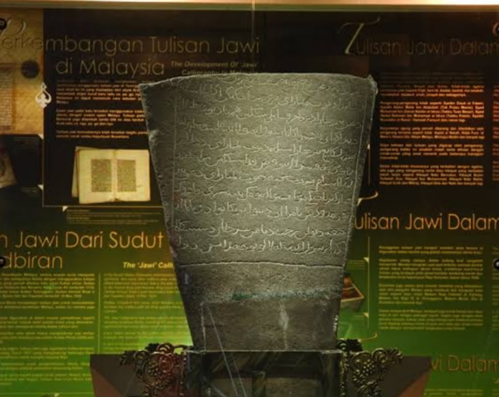
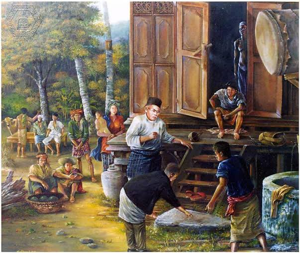
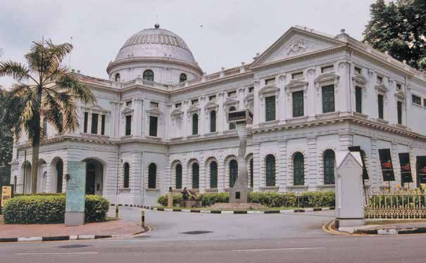

Nama Artifak
Batu Bersurat Terengganu (Inscribed Stone of Terengganu)
Batu Bersurat Terengganu merupakan sebuah artifak sejarah yang mempunyai inskripsi tulisan Jawi dalam bahasa Melayu. Artifak ini bertarikh 702 Hijrah bersamaan 1303 Masihi dan menjadi bukti penting perkembangan Islam serta penggunaan tulisan Jawi di Alam Melayu.

Lokasi
Lokasi Penemuan
Batu Bersurat Terengganu ditemukan di kawasan Kampung Buluh, Kuala Berang, Hulu Terengganu, Terengganu. Kawasan penemuan ini terletak berhampiran Sungai Tersat, yang turut dikenali sebagai Sungai Tara dalam beberapa catatan.
Menurut rekod rasmi Lembaga Muzium Negeri Terengganu, penemuan batu tersebut oleh Sayyid Hussein Ghulam Al-Bukhari direkodkan pada tahun 1902. Walau bagaimanapun, terdapat catatan sejarah lain yang menyebut tahun 1887 sebagai tahun penemuan awalnya.
LIHAT DI PETAKampung Buluh, Kuala BerangLokasi Memorial
Memorial Batu Bersurat terletak di Kampung Buluh, Kuala Berang, Hulu Terengganu. Memorial ini dibangunkan sebagai peringatan terhadap lokasi penemuan artifak tersebut dan menjadi tempat kunjungan serta kajian berkaitan sejarah Batu Bersurat Terengganu.
Memorial tersebut telah dirasmikan pada 13 April 1992.
Perhatian: Memorial Batu Bersurat merupakan tapak peringatan lokasi penemuan dan mempunyai replika Batu Bersurat. Ia perlu dibezakan daripada artifak asal.
LIHAT DI PETAMemorial Batu BersuratLokasi Pengurusan dan Pemeliharaan
Batu Bersurat Terengganu pernah dipindahkan ke Muzium Raffles di Singapura pada tahun 1923 atas faktor keselamatan. Artifak tersebut kemudiannya dikembalikan kepada pihak Terengganu pada tahun 1991.
Pengurusan warisan sejarah negeri ini berkait rapat dengan peranan Lembaga Muzium Negeri Terengganu dalam usaha mengumpul, memulihara, menyelamat, menyelidik dan menyebarkan maklumat berkaitan warisan negeri.
LIHAT DI PETAMuzium Negeri TerengganuLatar Belakang Batu Bersurat Terengganu
Sejarah Awal Batu Bersurat Terengganu
Batu Bersurat Terengganu merupakan sebuah artifak sejarah yang sangat penting dalam perkembangan Islam dan tulisan Jawi di Alam Melayu. Inskripsi pada batu ini menggunakan bahasa Melayu dengan tulisan Jawi dan lazimnya ditarikhkan pada 702 Hijrah bersamaan 1303 Masihi. Kandungannya memperlihatkan pengaruh Islam dalam kehidupan masyarakat, khususnya melalui catatan berkaitan peraturan, undang-undang dan amalan kehidupan berteraskan Islam.
Menurut catatan sejarah, batu ini dipercayai ditemukan selepas berlakunya banjir besar pada tahun 1887 di kawasan tebing Sungai Tersat, Kampung Buluh, Kuala Berang, Hulu Terengganu. Pada peringkat awal, batu tersebut dikatakan telah dibawa oleh penduduk tempatan ke kawasan surau dan digunakan sebagai pelapik untuk membasuh kaki sebelum memasuki surau kerana masyarakat ketika itu belum menyedari nilai sejarah yang terkandung pada inskripsinya.
Pada tahun 1902, seorang saudagar bernama Sayyid Husin Ghulam Al-Bukhari dikatakan menyedari kewujudan tulisan pada batu tersebut ketika berkunjung ke surau berkenaan. Beliau kemudiannya mendapatkan bantuan penduduk kampung untuk membawa batu itu ke Kuala Terengganu dan mempersembahkannya kepada Sultan Zainal Abidin III. Batu tersebut kemudiannya ditempatkan di Bukit Puteri.

Usaha Awal Penelitian dan Kajian
Pada tahun 1922, Mejar H.S. Peterson, yang ketika itu merupakan Penolong Penasihat British di Terengganu, telah mengambil langkah untuk meneliti tulisan pada Batu Bersurat. Gambar batu tersebut diambil oleh seorang jurugambar Jepun, N. Suzuki, bagi membantu usaha sarjana memahami dan membaca inskripsi yang terdapat padanya.
Pada tahun 1923, Batu Bersurat Terengganu telah dipinjamkan ke Raffles Museum di Singapura untuk tujuan penyelidikan dan penyimpanan. Pemindahan ini menjadi salah satu peristiwa penting dalam sejarah pengurusan artifak tersebut kerana batu berkenaan kemudiannya melalui beberapa peringkat pemindahan sebelum dikembalikan ke Terengganu pada tahun 1991.
